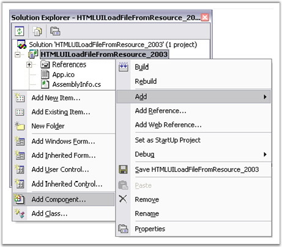
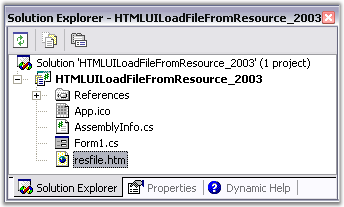
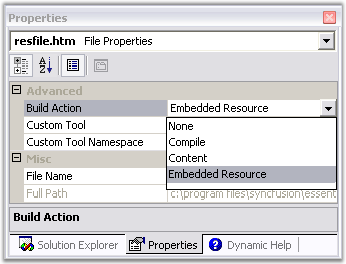
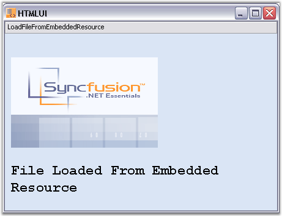

The HTML file can be loaded as an Embedded Resource in the HTMLUI control. The procedure to be followed for making an HTML file as an embedded resource is discussed below.
1. Open the Solution Explorer from the View menu of the Menu Bar.
2. Right-click on the C# file name in the Solution Explorer. A menu opens.
3. Click the Add tab; a sub-menu is displayed.

Figure 19: Menu options in adding a new HTML File
4. In the sub-menu, click AddNewItem ; a template wizard is displayed.
5. In the wizard, select HTML Page. The default name for the page is 'HTMLPage1.htm'.
6. You can change the name by using the Name tab given at the bottom of the wizard.

Figure 20: Tree view of the Solution Explorer
7. The HTML file will be shown in the Solution Explorer as shown in the figure above.
8. In the properties grid of the resource HTML file, specify its BuildAction as the Embedded Resource.

Figure 21: Properties Window of the Resource HTML File
The file can be retrieved from the resource by using the following C# code.
|
[C#]
// Load the specified HTML file which is marked as the project's embedded resource. htmlStream = (Stream)Assembly.GetExecutingAssembly().GetManifestResourceStream ("LoadingFileFromResource.resfile.htm");
this.htmluiControl1.LoadHTML(htmlStream); |
|
[VB.NET]
' Load the specified HTML file which is marked as the project's embedded resource. Private htmlStream = Ctype(System.Reflection.Assembly.GetExecutingAssembly(). GetManifestResourceStream ("LoadingFileFromResource.resfile.htm"), Stream)
Me.HtmluiControl1.LoadHTML(htmlStream) |
It is necessary to invoke the System.IO and System.Reflection namespaces to use the classes and their methods used in the code above.
The System.Reflection.Assembly.GetExecutingAssembly method gets the assembly from which the code is currently running from and the GetManifestResourceStream method of the same class loads the specified manifest resource from the assembly.
The System.IO.Stream is used to provide a generic view of sequence of bytes when the IO in the assembly is referred.
Note: The string entered inside the GetManifestResourceStream method is in reference to the Default namespace found in the Properties window of the C# file in the Solution Explorer. This may vary for the users.
The following image shows file loaded from an embedded resource.

Figure 22: Loading HTML File from an Embedded Resource into the HTMLUI Control
 Load Resource File
Sample
Load Resource File
Sample